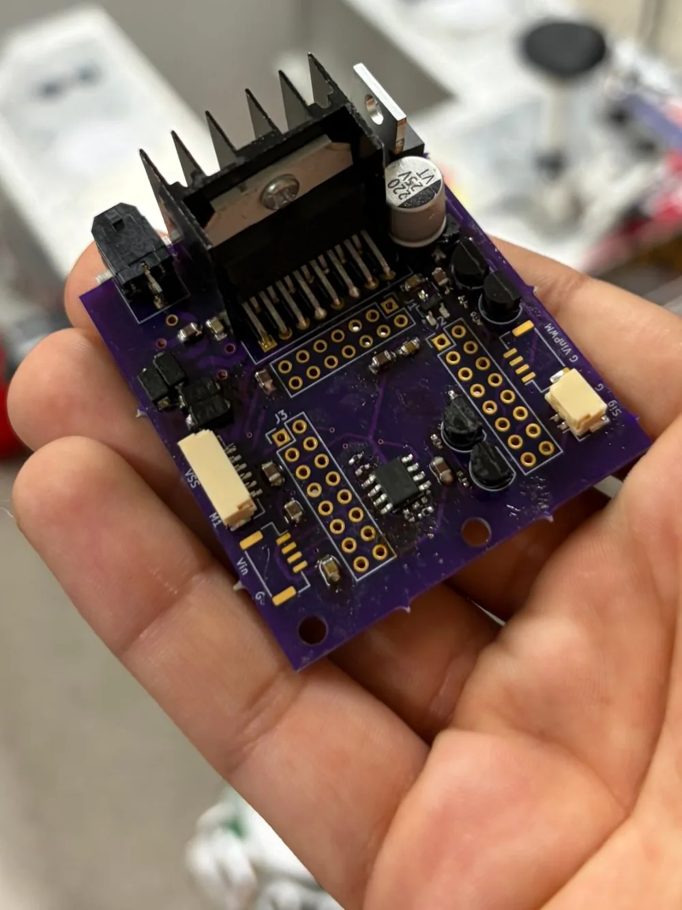
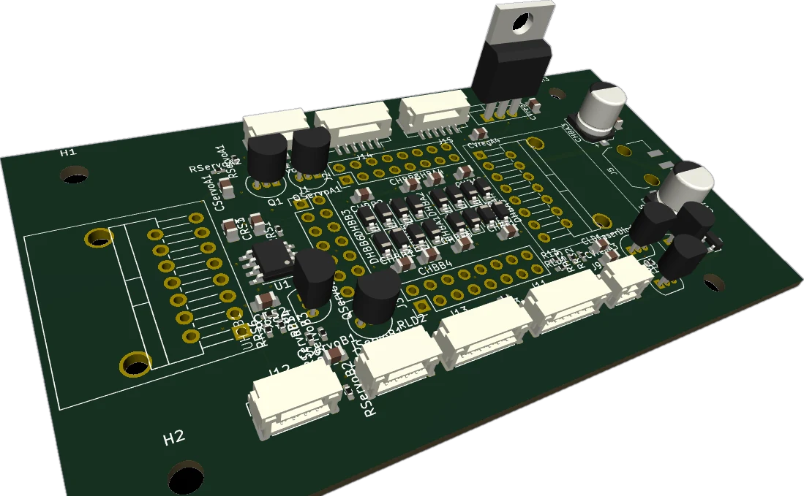
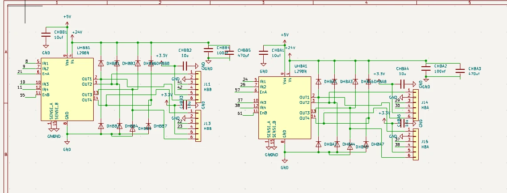
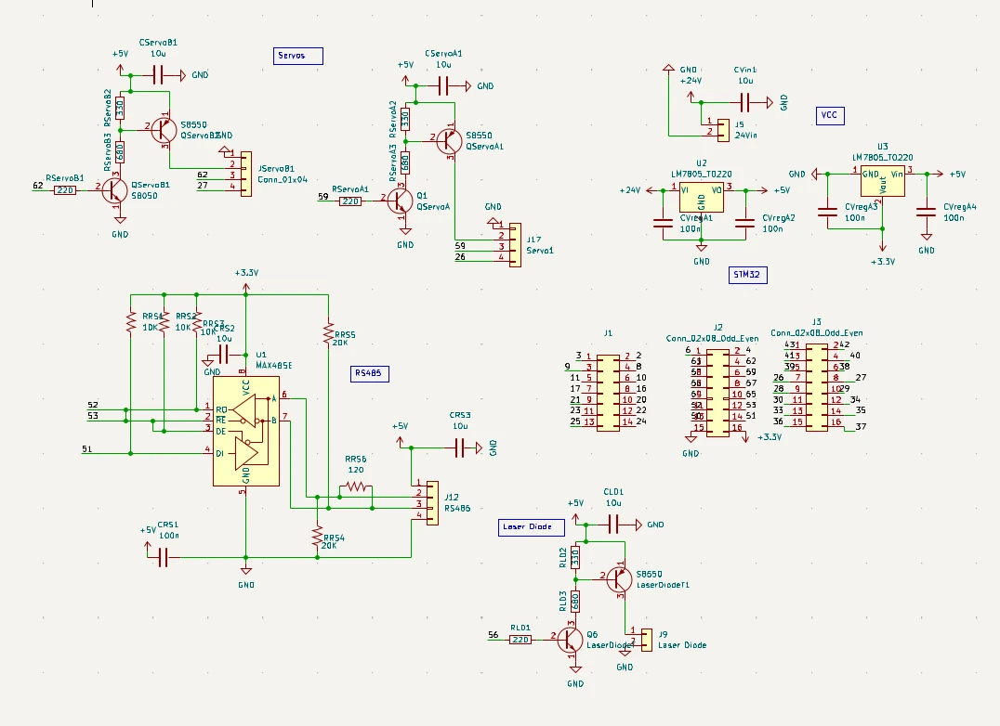

3-DOF robotic wrist controller

A custom KiCad PCB that controls a 3-DOF robotic wrist (pitch, yaw, roll) and its gripper. One board takes a single 24 V input and provides four DC motor channels with magnetic encoder feedback, two servo outputs, a laser diode output and an RS-485 link, all run by a plug-in STM32. I designed the board, wrote the firmware and tested it end to end.

Motor drive. Two L298N dual H-bridges give four independent DC motor channels: one for each wrist axis and one for the gripper. The L298N has no internal clamp diodes, so each driver has eight external flyback diodes to catch the inductive kick when a motor is switched off or reversed.
Feedback. Each motor connector carries both motor leads plus encoder power and two encoder signals, so one cable per joint handles drive and feedback.


Level shifting. Servo and laser outputs use an S8050 NPN driving an S8550 PNP, so a 3.3 V MCU pin can switch a 5 V load.
Firmware. C on the STM32 runs a PID position loop per axis, closing on real-time encoder feedback. On the assembled wrist it tracks within ±2° on all three axes.
The plot below is the same kind of loop. The target jumps at the first mark and a load lands on the arm at the second. Drag the gains to change how it recovers.